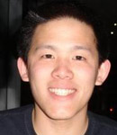
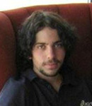

LAB ALUMNI
Lab Group Photo, August 2009Lab Dinner, December 2008
-
Amit Akula
EECS
Email: -
Ben Kehoe
Lab Position: PhD Student, ME
Email: -
Zach Mulder
Major: BS, IEOR
Graduation Year: 2014
Email: zjmulder [at] berkeley [dot] edu  Nikhita Singh
Nikhita Singh
Major: BS, IEOR
Graduation Year: 2014
Email: nikhitasingh [at] berkeley [dot] edu-
Patrick Hop
Major: Applied Mathematics, CS
Graduation Year: 2014
Email: hop.patrick1 [at] gmail [dot] com  Kyunam Kim
Kyunam Kim
Lab Position: PhD Student, ME
Email: knkim [at] berkeley [dot] edu Arjun Baokar
Arjun Baokar
Major: BA, CS
Graduation Year: 2015
Email: arjunbaokar [at] berkeley [dot] edu Rundong Tian
Rundong Tian
Major: BS, ME
Graduation Year: 2014
Email: rutian [at] berkeley [dot] edu-
Kushal Ranjan
Major: BS, EECS
Graduation Year: 2015
Email: kranjan [at] berkeley [dot] edu  Swetha Repakula
Swetha Repakula
Major: BS, EECS
Graduation Year: 2015
Email: swetha.repakula [at] berkeley [dot] edu-
Gregory Roberts
Major: BS, EECS
Graduation Year: 2014
Email: gdroberts [at] berkeley [dot] edu -
Keeley Maher
Major: BS, Mech. Eng.
Graduation Year: 2014
Email: maher.keeley [at] berkeley [dot] edu -
Joseph Moghadam
Major: BS, EECS
Graduation Year: 2015
Email: jmoghadam [at] berkeley [dot] edu -
Jing Chen
Major: BS, ME
Graduation Year: 2016
Email: jing.chen [at] berkeley [dot] edu  Noah Gilmore
Noah Gilmore
Major: BS, EECS
Graduation Year: 2015
Email: noah.w.gilmore [at] gmail [dot] com Kevin Gong
Kevin Gong
Major: BA, CS
Graduation Year: 2014
Email: kevinkgong [at] gmail [dot] com Aviv Adler
Aviv Adler
Visiting Undergraduate, Princeton University
Email: aadler1561@gmail.com-
Eugenio Tacchini
Lab Position: Visiting Scholar
Email: Email: eugenio [dot] tacchini [at] unimi [dot] it
http://www.dadabik.org/
-
Konstantin Seiler
Lab Position: Visiting Scholar
Email: k [dot] seiler [at] acfr [dot] usyd [dot] edu [dot] au
-
Rajat Shah
Graduated: BS, EECS, 2012
Email: rajatm.shah [at] berkeley [dot] edu
-
Timmy Siauw
Lab Position: PhD Student, CE
Email: timmy.siauw [at] gmail [dot] com
-
Siamak Faridani
Lab Position: PhD Student, IEOR
Email: faridani [at] gmail [dot] com
http://www2.decf.berkeley.edu/~faridani a -
Dmitry Bereson
Lab Position: Post-Doc
Email: dberenso [at] cs [dot] cmu [dot] edu
http://www.cs.cmu.edu/~dberenso -
Elena Agapie
Major: BS, CS, 2009
Visiting Student, Summer 2008
Email: e.agapie [at] jacobs-university [dot] de -
Marshall Anderson
Major: Mechanical Engineering
Graduation Year: 2007
Email: anderson.marshall [at] gmail [dot] com -
Ephrat Bitton
Lab Position: PhD Student, IEOR
Email: ebitton [at] berkeley [dot] edu -
Judy Hoffman
Major: BS, EECS
Graduation Year: 2010
Email: judyhoffman [at] berkeley [dot] edu -
Melissa Goldstein
Lab Position: PhD Student, IEOR
Email: m.goldstein [at] berkeley [dot] edu
-
David Wong
Major: BS, EECS & Business Administration
Graduation Year: 2010
Email: david_wong [at] berkeley [dot] edu -
Pranthik Samal
Major: BS, EECS
Graduation Year: 2011
Email: psamal07 [at] berkeley [dot] edu -
Justin Woo
Major: BS, IEOR
Graduation Year: 2010
Email: justinwoo [at] berkeley [dot] edu -
Shervin Javdani
Major: BS, EECS
Graduation Year: 2010
Email: shervination [at] berkeley [dot] edu -
Ajay Patel
Major: BS, ME
Graduation Year: 2010
Email: adpatel [at] berkeley [dot] edu -
Dhawal Mujumdar
Lab Position: Masters Student, School of Information
Email: dhawal [at] berkeley [dot] edu
http://people.ischool.berkeley.edu/~dhawal/ - Jur van den Berg
Lab Position: Post-Doc
Email: berg [at] berkeley [dot] edu
http://ieor.berkeley.edu/~berg
Graduation Year: 2007
-
Ron Alterovitz
Lab Position: Post-doc, NIH Postdoctoral Research & Fellow, UC Berkeley and UCSF, 2008
Current Position: Assistant Professor, Computer Science, University of North Carolina at Chapel Hill
Email: ron [at] cs [dot] unc [dot] edu
http://www.cs.unc.edu/~ron/ -
Patti Bao
Lab Position: BA, 2007
Current Position: Graduate Student, Technology & Social Behavior Program, Northwestern University
Email: pattibao [at] northwestern [dot] edu
http://www.idreamofbeing.com -
Danny Bazo
Lab Position: BS, 2008
Current Position: Graduate Student, Mechanical Engineering, Bristol University, UK
Email: dannybazo [at] gmail [dot] com -
Robert-Paul Berretty
Lab Position: Visiting Researcher
Current Position: Project Leader, Philips Research, Eindhoven
Email: karl [at] ee [dot] washington [dot] edu
http://www.philips.com/3dsolutions -
Karl Bohringer
Lab Position: Post-Doc, 1998
Current Position: Professor, Electrical Engineering, University of Washington
Email: karl [at] ee [dot] washington [dot] edu
http://www.ee.washington.edu/faculty/karl -
Nathan Burkhart
Lab Position: MS, 2007
Current Position: Program Manager, Microsoft Corporation
Email: nathan.burkhart [at] microsoft [dot] com -
Brian Sung Chul Choi
Lab Position: BS, 2006
Current Position: Graduate Student, UCLA
Email: schoi [at] cs [dot] ucla [dot] edu
http://www.cs.ucla.edu/~schoi -
Vincent Duindam
Lab Position: Post-Doc, 2008
Email: vincentduindam [at] gmail [dot] com -
Menasheh Fogel
Lab Position: MS, 2008
Current Position: Project Lead, IT Blueprint, Bayer HealthCare - Product Supply Biotech
Email: menasheh.fogel.b [at] bayer [dot] com -
Xiao-Yu Fu
Major: BS, Bioengineering
Graduation Year: 2009
Email: xyfu [at] berkeley [dot] edu -
Shail Gala
Lab Position: BS, 2005
Current Position: Project Engineer, PDL Biopharma & Bartender, Mandaloun Restaurant
Email: shail [at] berkeley [dot] edu
http://www.linkedin.com/in/shailgala -
Dadi Gudmundsson
Lab Position: PhD, 1997
Current Position: Principal Consultant, Sensor Analytics Inc., USA
Email: dadi [at] sensoranalytics [dot] com
http://www.sensoranalytics.com/html/about_us.html  Dhruv Gupta
Dhruv Gupta
Lab Position: MS, 1999
Current Position: Director, Product Management & Marketing, AmberPoint Inc.
Email: dhruv [at] cal [dot] berkeley [dot] edu
http://www.amberpoint.com- Kris Hauser
Lab Position: Post-Doc, 2009
Email: hauser [at] berkeley [dot] edu
http://www.stanford.edu/~khauser -
Reid Hironaga
Lab Position: BS, 2008
Email: rhironaga [at] berkeley [dot] edu -
Annamarie Ho
Lab Position: BS, 2003
Current Position: Artist
Email: info [at] annamarieho [dot] com
http://www.annamarieho.com -
Eric Hwang
Major: BS, EECS
Graduation Year: 2010
Email: erico [at] berkeley [dot] edu -
Michael Idinopulos
Lab Position: Post-Doc, 1999
Current Position: Vice President, Socialtext
Email: Michael.idinopulos [at] socialtext [dot] com
http://michaeli.typepad.com -
Adam Jacobs
Lab Position: Post-Doc, 1998
Current Position: Lead Software Developer, 1010data, Inc.
Email: adam.jacobs [at] 1010data [dot] com -
Rik Jansen
Lab Position: MS Student, EECS
Email: rikjansen [at] berkeley [dot] edu -
Jeff Jensen
Lab Position: BS, EECS, 2008
Email: jeffcjensen [at] berkeley [dot] edu
http://jeffcjensen.net -
Anjali Koppal
Lab Position: BS, 2008
Current Position: Graduate Student, Computer Science, Columbia University
Email: ak2726 [at] columbia [dot] edu -
Jonathon Kotker
Major: BS, EECS & Math, 2010
Email: jo_ko_berkeley [at] berkeley [dot] edu -
Anand Kulkarni
Lab Position: PhD Student, IEOR
Email: anandk [at] berkeley [dot] edu
http://www.ocf.berkeley.edu/~anandk -
Bryce Lee
Lab Position: MS, 2008
Current Position: Software Engineer, Microsoft
Email: bryce [at] preciselee [dot] com -
Eric Lee
Lab Position: BS, 1998
Current Position: Senior Software Engineer & Technical Lead, Cisco Systems
Email: cirelee [at] gmail [dot] com - 
Eric Liaw
Lab Position: BS, 2008
Current Position: Graduate Student, Stanford University
Email: eric.ty.liaw [at] gmail [dot] com -
Bryan Lin
Lab Position: BS, 2005
Current Position: Engineer, Lockheed Martin & Graduate Student, Stanford University
Email: bryan.lin [at] cal [dot] berkeley [dot] edu -
Jingtai Liu
Lab Position: Visiting Researcher
Current Position: Professor, NanKai University, China
Email: liujt [at] robot.nankai [dot] edu [dot] cn -
Rick Mann
Lab Position: BS, 2006
Current Position: Sr. Software Engineer, Kaleidescape, Inc.
Email: rmann [at] latencyzero [dot] com
http://roderickmann.org -
Jeremy May
Lab Position: BA, 2009
Email: jmay [at] mills [dot] edu -
Jane McGonigal
Lab Position: PhD, 2006
Current Position: Researcher, Instutute for the Future, Palo Alto, California
Email: jmcgonigal [at] iftf [dot] org -
Mark Moll
Lab Position: Visiting Researcher, 2001
Current Position: Research Scientist, Rice University
Email: mmoll [at] cs [dot] rice [dot] edu
http://www.cs.rice.edu/~mmoll -
Hadi Moradi
Lab Position: PhD, 1999
Current Position: Assistant Professor, University of Tehran
Email: moradih [at] ut [dot] ac [dot] ir
http://teamster.usc.edu/~moradi - 
David Nachum
Major: BS, EECS
Graduation Year: 2009
Current Position: Associate Product Manager at Google
Email: david.nachum [at] gmail.com -
Tavi Nathanson
Lab Position: MS, EECS, 2009
Email: dnathanson [at] berkeley [dot] edu -
Anil Rao
Lab Position: PhD
Current Position: Vice President, Socialtext
Email: arao [at] qualcomm [dot] com -
Hongliang Ren
Lab Position: Visiting Researcher, 2006
Current Position: Post-doc, Chinese University of Hong Kong
Email: hlren [at] ee [dot] cuhk [dot] edu [dot] hk
http://www.ee.cuhk.edu.hk/~hlren/ -
Amir Sadoughi
Major: BS, EECS
Graduation Year: 2011
Email: asadoughi [at] berkeley [dot] edu -
Prasad V. Saraph
Lab Position: MS, 1999
Current Position: Global Supply Chain Manager, Product Supply-Biotech, Pharmaceuticals Division, Bayer HealthCare, LLC
Email: prasad.saraph.b [at] bayer [dot] com
http://www.linkedin.com/in/prasadvsaraph -
Jeremy Schiff
Lab Position: PhD, EECS, 2009
Email: jschiff [at] eecs [dot] berkeley [dot] edu
http://www.cs.berkeley.edu/~jschiff
http://arborlabs.com -
Ted Schmidt
Lab Position: MS, 2007
Current Position: Software Engineer, Mobile Sharpcast, Inc.
Email: ttschmidt [at] gmail [dot] com -
Rafael Send
Major: BS, EECS
Graduation Year: 2012
Email: rsend [at] berkeley [dot] edu  Max Shimshak
Max Shimshak
Major: BS, ME
Graduation Year: 2009
Email: shaqpack [at] gmail [dot] com-
Rory Solomon
Lab Position: BA, 2002
Current Position: Software Engineer, Artist, Instructor, Parsons the New School for Design
Email: rsolomon [at] gmail [dot] com
http://www.rorysolomon.com -
Dezhen Song
Lab Position: PhD, 2004
Current Position: Assistant Professor, Department of Computer Science, Texas A&M University
Email: dzsong [at] cs [dot] tamu [dot] edu
http://faculty.cs.tamu.edu/dzsong -
Carl Sutter
Lab Position: MS, 1994
Current Position: CTO, CrownPeak Technology
Email: carl [at] carlsutter [dot] com
http://www.crownpeak.com
http://teletoyland.com  Alex Sydell
Alex Sydell
Major: BS, EECS
Graduation Year: 2011
Email: asydell [at] berkeley [dot] edu-
Jeff Tang
Lab Position: BS, EECS, 2008
Email: jefftang [at] berkeley [dot] edu -
Meysam Torabi
Lab Position: PhD Student, IEOR
Email: torabi [at] berkeley [dot] edu -
Vijay Vasudevan
Lab Position: BS, 2006
Current Position: Graduate Student, Carnegie Mellon University
Email: vrv+web [at] cs [dot] cmu [dot] edu
http://www.cs.cmu.edu/~vrv -
Rick Wagner
Lab Position: PhD, 1997
Current Position: Member, Space Robotics Technical Committee, RAS, IEEE
Email: richard dot J dot Wagner at gmail dot com
http://rjwagner49.com/ -
Andrew Wan
Major: BS, CS
Graduation Year: 2009
Email: andrewwan [at] berkeley [dot] edu -
Connie Wang
Major: BS, Political Science & Mass Communications, 2009
Email: conniewang [at] berkeley [dot] edu -
Jijie Xu
Lab Position: Post-Doc, 2007
Current Position: Visiting Assistant Professor, Rochester Institute of Technology
Email: jijie.xu [at] rit [dot] edu  Mike Tao Zhang
Mike Tao Zhang
Lab Position: PhD, 2001
Current Position: Senior Manager, Spansion Inc., USA
Email: Mike.Zhang [at] spansion [dot] com
http://ford.ieor.berkeley.edu/tzhang-
Yan Zhang
Lab Position: MS, IEOR, 2009
Email: zhangyan [at] berkeley [dot] edu
http://www.decf.berkeley.edu/~zhangyan